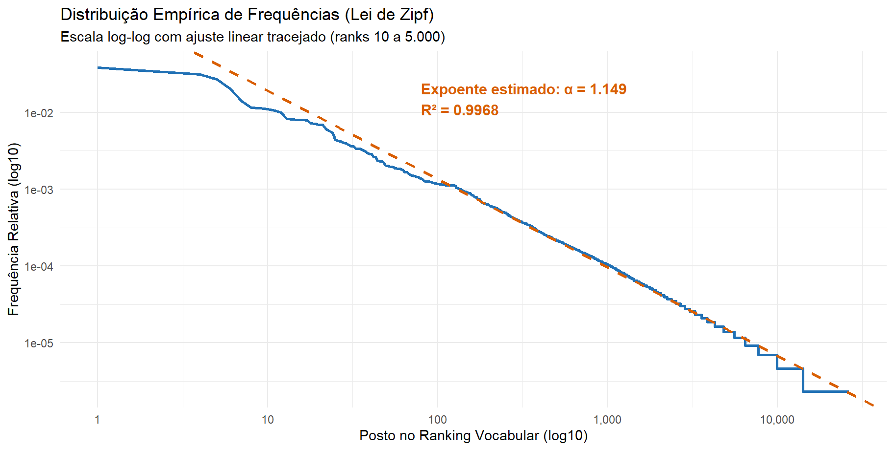
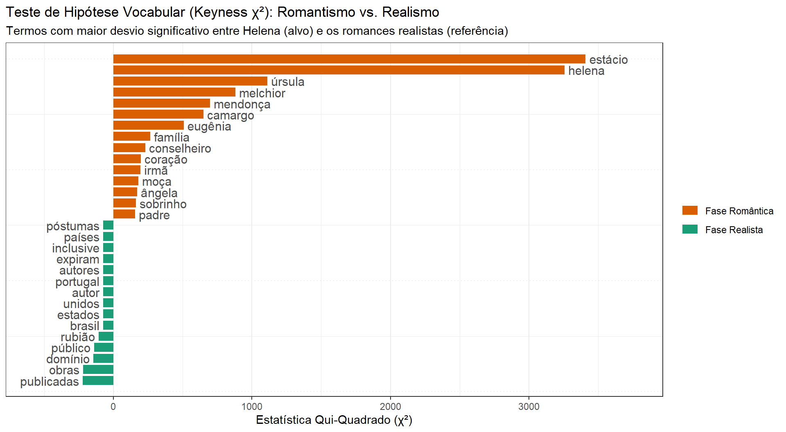
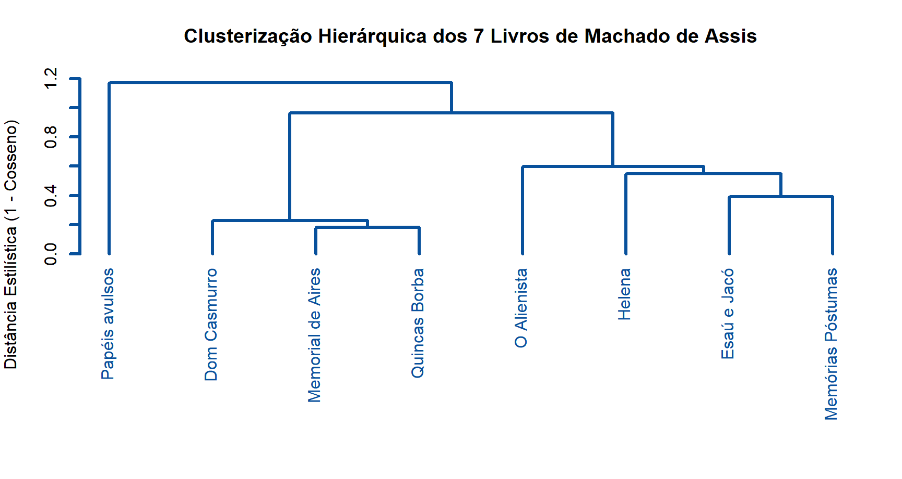
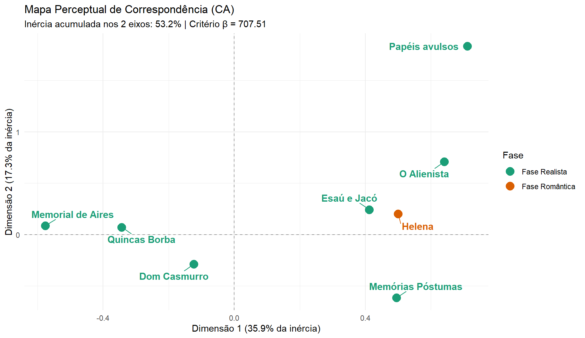
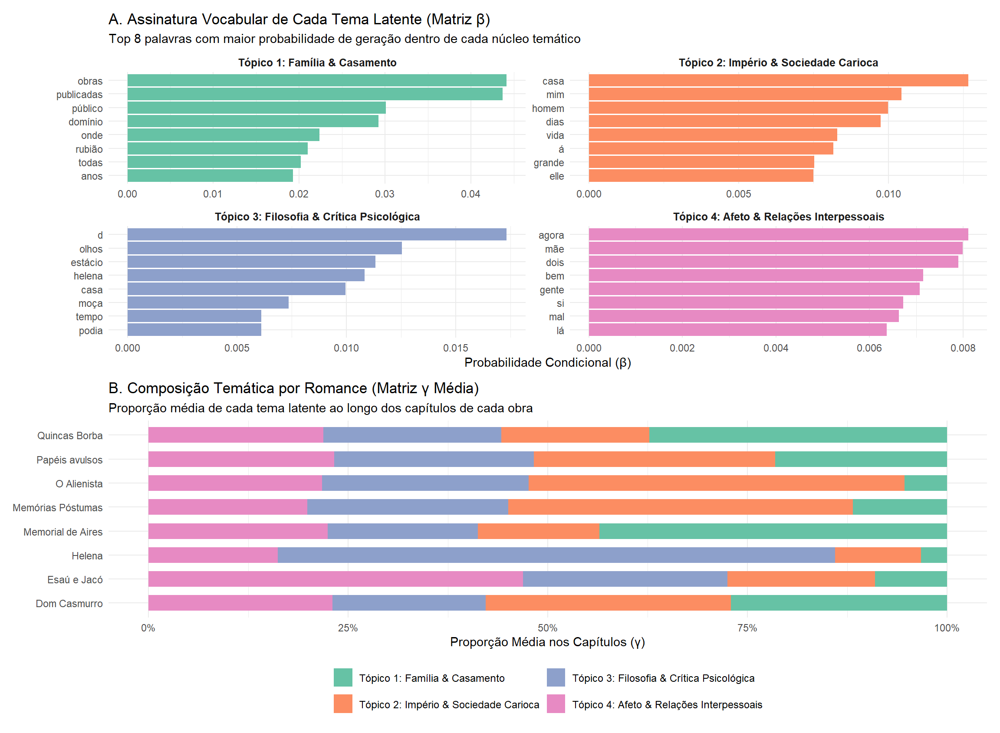

Leis de Potência, Keyness (χ²), Clusterização, Análise de Correspondência, LDA e Redes Semânticas
Nível Pós-Graduação (Mestrado & Doutorado): Esta seção avança da estatística descritiva para a modelagem inferencial e multivariada, testando formalmente leis empíricas de distribuição vocabular, hipóteses estilométricas, agrupamento hierárquico, redução de dimensionalidade, tópicos latentes bayesianos (LDA) e topologia de redes semânticas.
1. Leis Empíricas da Linguística Quantitativa (Lei de Zipf)
A Lei de Zipf postula que, em qualquer corpus natural suficientemente extenso, a frequência \(f(r)\) de uma palavra é inversamente proporcional ao seu posto \(r\) na tabela de frequências ordenadas:
Aplicando uma regressão linear ordinária (OLS) sobre os logaritmos da frequência e do posto (rank) no conjunto integral das 7 obras, estimamos o expoente empírico \(\alpha\) do léxico machadiano:
Ver código R
freq_zipf <- df_livros %>%unnest_tokens(word, text) %>%filter(!str_detect(word, "^[0-9]+$")) %>%count(word, sort =TRUE) %>%mutate(rank =row_number(),freq_rel = n /sum(n) )modelo_zipf <-lm(log10(freq_rel) ~log10(rank), data =filter(freq_zipf, rank >=10, rank <=5000))alpha_est <-round(-coef(modelo_zipf)[2], 3)r2_est <-round(summary(modelo_zipf)$r.squared, 4)ggplot(freq_zipf, aes(x = rank, y = freq_rel)) +geom_line(color ="#2171b5", linewidth =1) +geom_abline(intercept =coef(modelo_zipf)[1],slope =coef(modelo_zipf)[2],linetype ="dashed", color ="#d95f02", linewidth =0.9 ) +scale_x_log10(labels = scales::comma) +scale_y_log10(labels = scales::scientific) +annotate("text", x =80, y =0.015,label =paste0("Expoente estimado: α = ", alpha_est, "\nR² = ", r2_est),hjust =0, fontface ="bold", color ="#d95f02", size =4 ) +labs(title ="Distribuição Empírica de Frequências (Lei de Zipf)",subtitle ="Escala log-log com ajuste linear tracejado (ranks 10 a 5.000)",x ="Posto no Ranking Vocabular (log10)",y ="Frequência Relativa (log10)" )

Figura 1: Ajuste log-log da Lei de Zipf sobre o vocabulário integral das 7 obras de Machado de Assis.
2. Análise de Keyness (\(\chi^2\))
Para testar se a transição estética entre a Fase Romântica (Helena, 1876) e a Fase Realista (1881–1908) produz alterações estatisticamente significativas no vocabulário, aplicamos o teste de qui-quadrado (\(\chi^2\)) de Keyness com correção de Yates:
Ver código R
df_fases <- df_livros %>%group_by(fase) %>%summarise(text =paste(text, collapse =" "), .groups ="drop")corp_fases <-corpus(df_fases$text, docnames = df_fases$fase)dfm_fases <-tokens(corp_fases, remove_punct =TRUE, remove_numbers =TRUE, remove_symbols =TRUE) %>%tokens_tolower() %>%tokens_remove(c(stopwords("portuguese"), sw_extra)) %>%dfm()resultado_keyness <-textstat_keyness(dfm_fases, target ="Fase Romântica", measure ="chi2")textplot_keyness(resultado_keyness, n =15, color =c("#d95f02", "#1b9e77")) +labs(title ="Teste de Hipótese Vocabular (Keyness χ²): Romantismo vs. Realismo",subtitle ="Termos com maior desvio significativo entre Helena (alvo) e os romances realistas (referência)",x ="Estatística Qui-Quadrado (χ²)" )

Figura 2: Estatística Qui-Quadrado (χ²) dos termos significativamente associados à Fase Romântica vs. Fase Realista.
3. Similaridade de Cosseno e Cluster
Calculamos a Matriz de Similaridade de Cosseno (\(\cos \theta\)) sobre as frequências relativas do vocabulário completo de cada obra. Valores próximos de \(1{,}00\) indicam alta convergência lexical entre os romances:
3.1 Matriz de Similaridade de Cosseno
Ver código R
as_tibble(mat_simil, rownames ="Obra") %>%gt() %>%fmt_number(columns =-Obra, decimals =3, dec_mark =",") %>%data_color(columns =-Obra,palette =c("#f7fbff", "#2171b5"),domain =c(min(mat_simil), 1) ) %>%tab_header(title =md("**Matriz de Similaridade Estilística (Cosseno)**"),subtitle ="Calculada sobre frequências relativas na DFM após remoção de stopwords" )
Warning: Some values were outside the color scale and will be treated as NA
Some values were outside the color scale and will be treated as NA
Some values were outside the color scale and will be treated as NA
Tabela 1: Matriz de Similaridade de Cosseno entre as 7 Obras de Machado de Assis
Matriz de Similaridade Estilística (Cosseno)
Calculada sobre frequências relativas na DFM após remoção de stopwords
Obra
Dom Casmurro
Esaú e Jacó
Helena
Memorial de Aires
Memórias Póstumas
O Alienista
Papéis avulsos
Quincas Borba
Dom Casmurro
1,000
0,545
0,390
0,796
0,570
0,375
0,022
0,770
Esaú e Jacó
0,545
1,000
0,501
0,391
0,610
0,485
0,044
0,431
Helena
0,390
0,501
1,000
0,282
0,473
0,378
0,036
0,320
Memorial de Aires
0,796
0,391
0,282
1,000
0,338
0,265
0,029
0,818
Memórias Póstumas
0,570
0,610
0,473
0,338
1,000
0,462
0,032
0,400
O Alienista
0,375
0,485
0,378
0,265
0,462
1,000
0,111
0,317
Papéis avulsos
0,022
0,044
0,036
0,029
0,032
0,111
1,000
0,029
Quincas Borba
0,770
0,431
0,320
0,818
0,400
0,317
0,029
1,000
3.2 Agrupamento Hierárquico
A partir da matriz de dissimilaridade angular (\(D_{\cos} = 1 - \cos \theta\)), aplica-se o algoritmo hierárquico aglomerativo de Ward (ward.D2). O Coeficiente de Correlação Cofenética (\(CCC = 0.879\)) atesta a fidelidade com que a árvore bidimensional preserva as distâncias originais do espaço vetorial:
Ver código R
par(mar =c(3, 4, 3.5, 2))plot( cluster_livros,main ="Clusterização Hierárquica dos 7 Livros de Machado de Assis",sub =paste0("Distância de Cosseno (Método Ward.D2) | Correlação Cofenética (CCC) = ", cofenetica),xlab ="", ylab ="Distância Estilística (1 - Cosseno)",hang =-1, lwd =3, col ="#08519c")

Figura 3: Dendrograma de agrupamento hierárquico das 7 obras baseado em distância de cosseno (Método Ward.D2).
4. Análise de Correspondência (CA)
Enquanto o dendrograma força partições discretas, a Análise de Correspondência (CA) decompõe a tabela de contingência Documento-Termo via Decomposição em Valores Singulares (SVD), projetando os 7 livros em um espaço euclidiano contínuo.
4.1 Critério \(\beta\) e Decomposição da Inércia
A tabela abaixo apresenta o teste global de associação entre livros e vocabulário (Critério \(\beta = 707.51 > 3\), rejeitando independência com \(p < 0{,}001\)) e a distribuição da inércia explicada pelos eixos fatoriais extraídos via SVD:
4.2 Resíduos Padronizados: Maiores Associações Obra \(\times\) Palavra
Para interpretar o que atrai cada romance para seu quadrante no mapa perceptual, listamos os pares (Obra \(\times\) Termo) com os maiores resíduos padronizados positivos (\(s_{ij}\)):
Ver código R
as_tibble(S, rownames ="Obra") %>%pivot_longer(cols =-Obra, names_to ="Termo", values_to ="Residuo_Padronizado") %>%group_by(Obra) %>%slice_max(Residuo_Padronizado, n =2, with_ties =FALSE) %>%ungroup() %>%arrange(desc(Residuo_Padronizado)) %>%gt() %>%fmt_number(columns = Residuo_Padronizado, decimals =3, dec_mark =",") %>%data_color(columns = Residuo_Padronizado, palette =c("#e5f5e0", "#1b9e77")) %>%tab_header(title =md("**Principais Atrações Vocabulares por Obra (Resíduos Padronizados)**"),subtitle ="Os dois termos com maior excesso relativo em cada romance dentro da matriz CA" )
Tabela 3: Top 10 Maiores Resíduos Padronizados Positivos na Matriz de Correspondência
Principais Atrações Vocabulares por Obra (Resíduos Padronizados)
Os dois termos com maior excesso relativo em cada romance dentro da matriz CA
Obra
Termo
Residuo_Padronizado
O Alienista
alienista
0,153
O Alienista
verde
0,124
Memórias Póstumas
á
0,085
Esaú e Jacó
paulo
0,081
Esaú e Jacó
pedro
0,080
Memórias Póstumas
elle
0,076
Memorial de Aires
carmo
0,072
Quincas Borba
maria
0,068
Helena
eugênia
0,065
Dom Casmurro
josé
0,064
Quincas Borba
palha
0,057
Papéis avulsos
segredo
0,057
Memorial de Aires
viúva
0,053
Helena
família
0,048
Papéis avulsos
visita
0,045
Dom Casmurro
ideia
0,042
4.3 Mapa Perceptual de Correspondência
Ver código R
ggplot(df_ca_plot, aes(x = Dim1, y = Dim2, color = Fase, label = Livro)) +geom_hline(yintercept =0, linetype ="dashed", color ="gray60") +geom_vline(xintercept =0, linetype ="dashed", color ="gray60") +geom_point(size =4.5) +geom_text_repel(size =4, fontface ="bold", box.padding =0.6) +scale_color_manual(values =c("Fase Romântica"="#d95f02", "Fase Realista"="#1b9e77")) +labs(title ="Mapa Perceptual de Correspondência (CA)",subtitle =paste0("Inércia acumulada nos 2 eixos: ", round(inercia_acum[2], 1), "% | Critério β = ", round(criterio_beta, 2)),x =paste0("Dimensão 1 (", round(inercia_pct[1], 1), "% da inércia)"),y =paste0("Dimensão 2 (", round(inercia_pct[2], 1), "% da inércia)") )

Figura 4: Mapa Perceptual da Análise de Correspondência projetando as 7 obras nos dois primeiros eixos latentes.
5. Modelagem Probabilística de Tópicos (LDA)
Utilizando a Alocação Latente de Dirichlet (LDA) sobre a matriz dos 827 capítulos, estimamos \(K = 4\) tópicos latentes via amostragem de Gibbs (topicmodels). A análise desdobra-se em duas matrizes probabilísticas complementares:
Matriz \(\beta = P(\text{palavra} \mid \text{tópico})\): Define o campo semântico de cada tópico latente;
Matriz \(\gamma = P(\text{tópico} \mid \text{documento})\): Revela a composição temática predominante de cada romance.
Ver código R
library(topicmodels)library(patchwork)df_caps <- df_livros %>%mutate(doc_id =paste(book_short, chapter_name, sep =" :: ")) %>%group_by(doc_id, book_short) %>%summarise(text =paste(text, collapse =" "), .groups ="drop")dfm_caps <-corpus(df_caps$text, docnames = df_caps$doc_id) %>%tokens(remove_punct =TRUE, remove_numbers =TRUE, remove_symbols =TRUE) %>%tokens_tolower() %>%tokens_remove(c(stopwords("portuguese"), sw_extra)) %>%dfm() %>%dfm_trim(min_termfreq =15, min_docfreq =5)dfm_caps <-dfm_subset(dfm_caps, ntoken(dfm_caps) >0)dtm_lda <-convert(dfm_caps, to ="topicmodels")set.seed(2026)modelo_lda <-LDA(dtm_lda, k =4, method ="Gibbs", control =list(iter =600, burnin =150))# Rotulação semântica interpretativa (Topic Labeling) baseada nos termos dominantes (β)rotulos_topicos <-c("1"="Tópico 1: Família & Casamento","2"="Tópico 2: Império & Sociedade Carioca","3"="Tópico 3: Filosofia & Crítica Psicológica","4"="Tópico 4: Afeto & Relações Interpessoais")# Painel A: Matriz Beta (Termos por Tópico Rotulado)topicos_beta <-tidy(modelo_lda, matrix ="beta") %>%group_by(topic) %>%slice_max(beta, n =8, with_ties =FALSE) %>%ungroup() %>%mutate(topic_label =recode(as.character(topic), !!!rotulos_topicos))p_beta <-ggplot(topicos_beta, aes(x =reorder_within(term, beta, topic_label), y = beta, fill = topic_label)) +geom_col(show.legend =FALSE) +facet_wrap(~ topic_label, scales ="free", ncol =2) +coord_flip() +scale_x_reordered() +scale_fill_brewer(palette ="Set2") +labs(title ="A. Assinatura Vocabular de Cada Tema Latente (Matriz β)",subtitle ="Top 8 palavras com maior probabilidade de geração dentro de cada núcleo temático",x =NULL, y ="Probabilidade Condicional (β)" ) +theme(strip.text =element_text(face ="bold", size =9.5))# Painel B: Matriz Gamma (Proporção de Tópicos por Livro)topicos_gamma <-tidy(modelo_lda, matrix ="gamma") %>%separate(document, into =c("Livro", "Capitulo"), sep =" :: ", extra ="merge") %>%group_by(Livro, topic) %>%summarise(gamma_medio =mean(gamma), .groups ="drop") %>%mutate(topic_label =recode(as.character(topic), !!!rotulos_topicos))p_gamma <-ggplot(topicos_gamma, aes(x = Livro, y = gamma_medio, fill = topic_label)) +geom_col(position ="fill", width =0.65) +coord_flip() +scale_y_continuous(labels = scales::percent) +scale_fill_brewer(palette ="Set2", name =NULL) +guides(fill =guide_legend(ncol =2)) +labs(title ="B. Composição Temática por Romance (Matriz γ Média)",subtitle ="Proporção média de cada tema latente ao longo dos capítulos de cada obra",x =NULL, y ="Proporção Média nos Capítulos (γ)" ) +theme(legend.position ="bottom", legend.text =element_text(size =9))p_beta / p_gamma +plot_layout(heights =c(1.35, 1))

Figura 5: Decomposição temática via LDA (K = 4): (A) Probabilidade condicional β dos termos por tópico rotulado e (B) Proporção média γ de cada tema por romance.
6. Teoria dos Grafos: Arquitetura Semântica e Storytelling Lexical
Para contar uma história clara sobre como o discurso machadiano se organiza — sem poluição de pares soltos —, extraímos o Componente Conexo Gigante (LCC) da rede de bigramas (onde todas as palavras estão interligadas por algum caminho) e aplicamos o algoritmo de modularidade de Louvain (Blondel et al., 2008) para revelar os 3 macro-eixos temáticos que sustentam a narrativa:
6.1 Como Ler o Grafo Semântico (Narrativa Estrutural)
Tamanho dos Círculos (Centralidade de Grau): Indica quantas expressões diferentes gravitam em torno daquela palavra. Vocábulos grandes funcionam como ímãs semânticos (ex.: casa, olhos, tempo, amor, vida).
Cores (Comunidades de Louvain): Agrupam automaticamente palavras que coocorrem densamente entre si, revelando microcampos narrativos (o campo doméstico/familiar em torno de casa/pai/mãe, o campo afetivo/corporal em torno de olhos/coração/alma, e o campo temporal/existencial em torno de tempo/dia/anos).
Espessura e Seta das Linhas: Mostram a direção de leitura (palavra 1 -> palavra 2) e a força de repetição da expressão no corpus.
Ver código R
set.seed(2026)ggraph(grafo, layout ="stress") +geom_edge_link(aes(edge_width = n),edge_colour ="gray80", alpha =0.7,arrow =arrow(length =unit(2, "mm")), end_cap =circle(3.5, "mm") ) +geom_node_point(aes(size = grau, color = eixo_narrativo), alpha =0.92) +# Rótulos discretos para nós secundáriosgeom_node_text(aes(label =ifelse(!is_hub, name, "")),repel =TRUE, size =3.1, color ="gray35", max.overlaps =15 ) +# Etiquetas destacadas apenas para os Top 10 Hubs (hierarquia visual)geom_node_label(aes(label =ifelse(is_hub, name, ""), color = eixo_narrativo),repel =TRUE, size =3.6, fontface ="bold",fill ="white", label.size =0.35, show.legend =FALSE ) +scale_edge_width(range =c(0.4, 2.2), name ="Freq. Bigrama") +scale_size(range =c(3.5, 11), name ="Conexões (Grau)") +scale_color_manual(values =c("Eixo 1: Espaço Doméstico & Social"="#1b9e77","Eixo 2: Afeto, Corpo & Subjetividade"="#d95f02","Eixo 3: Tempo, Vida & Existência"="#7570b3","Eixo 4: Conexões Periféricas"="#666666" ),name ="Macro-Eixo Narrativo" ) +labs(title ="Componente Semântica",subtitle ="Caixas destacadas = Top 10 Hubs Centrais | Cores = Comunidades de Louvain | Setas = Direção do Bigrama" ) +theme_void() +theme(plot.title =element_text(face ="bold", size =13.5),plot.subtitle =element_text(size =9.8, color ="gray35", margin =margin(b =8)),legend.position ="right" )
Figura 6: Componente Conexo Gigante da rede semântica de Machado de Assis, organizado nos macro-eixos narrativos de Louvain.
6.2 Tabela dos Principais Hubs Vocabulares da Rede
Ver código R
tibble(Palavra =V(grafo)$name,`Macro-Eixo Narrativo`=V(grafo)$eixo_narrativo,`Grau Total (Conexões)`=V(grafo)$grau,`Intermediação (Ponte)`=V(grafo)$intermediacao) %>%arrange(desc(`Grau Total (Conexões)`), desc(`Intermediação (Ponte)`)) %>%slice(1:10) %>%gt() %>%fmt_number(columns =`Intermediação (Ponte)`, decimals =1, dec_mark =",") %>%data_color(columns =`Grau Total (Conexões)`, palette =c("#f7fbff", "#08519c")) %>%tab_header(title =md("**Núcleos Articuladores e Pontes do Discurso Machadiano**"),subtitle ="Ranking estatístico baseado no Componente Conexo Gigante" )
Tabela 4: Top 10 Palavras Centrais (Hubs) do Componente Gigante por Grau e Intermediação
Núcleos Articuladores e Pontes do Discurso Machadiano
Ranking estatístico baseado no Componente Conexo Gigante